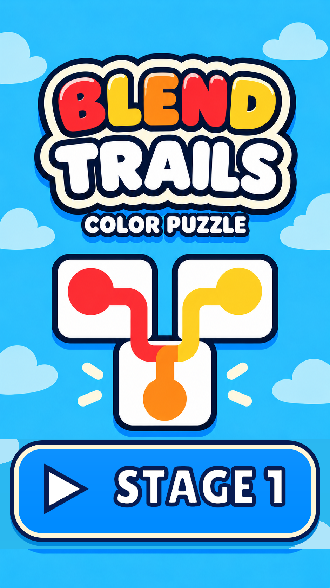
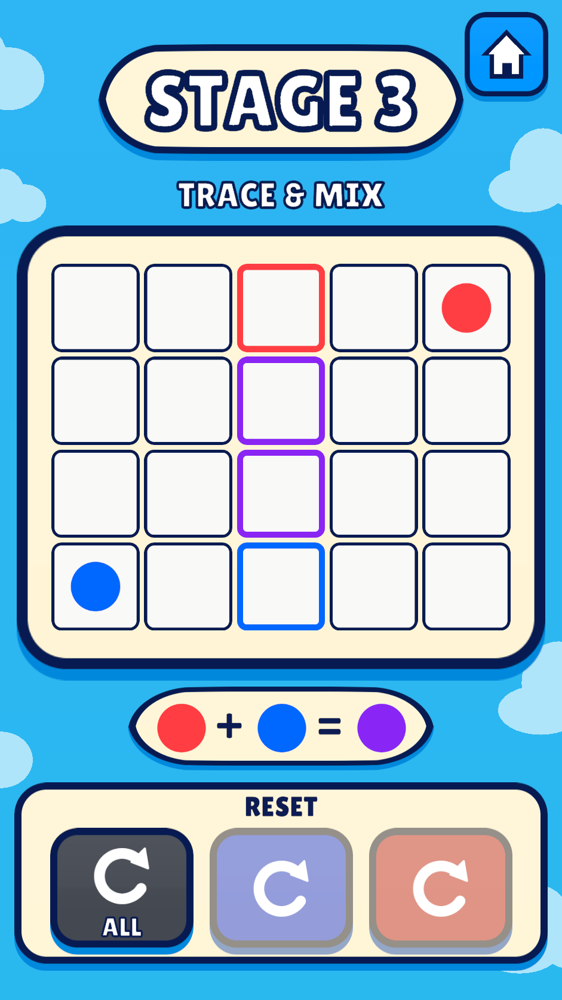
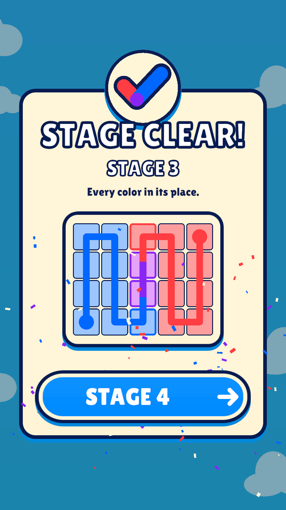
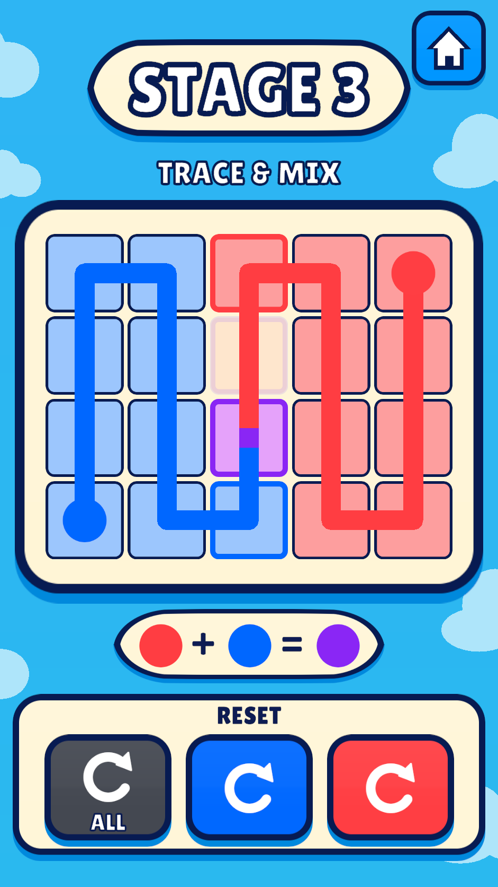
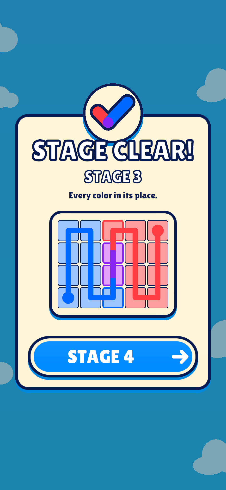
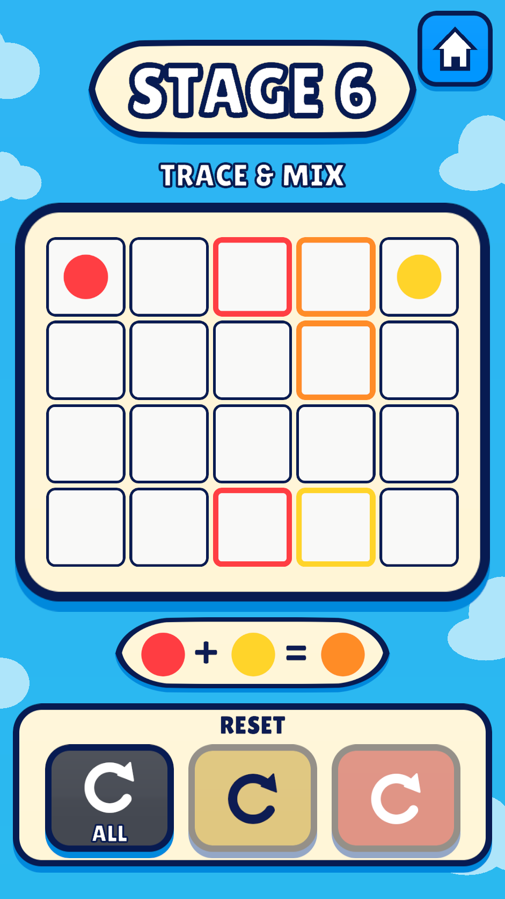
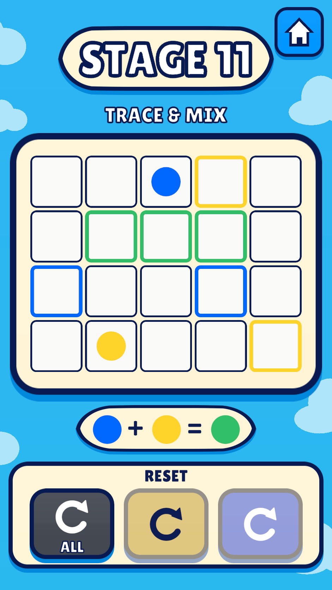

UI修正後のUnity実画面 · 2026-10-25
正式名のロゴへ差し替え。赤＋黄＝オレンジのモチーフを継承。

外枠を広げ、四隅のタイルにも余白を確保。

クリーム色のカード、混色チェック、完成盤面の縮小と次のStage番号。HOMEなし。

円弧と矢じりがつながる形へ修正。

941×2039の実画面。カードと操作ボタンをSafe Area内へ配置。

既存のステージ配色を維持。

